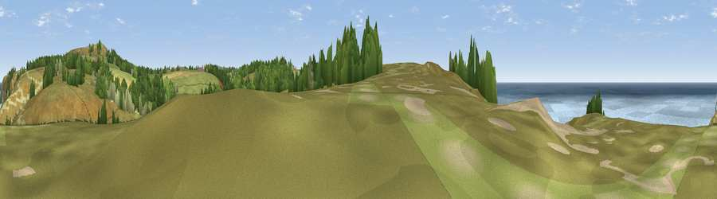

Viewpoint near Porthtowan
#7261 in England · top 15% of its area beats it · near PorthtowanThe view, rendered

A 360° render of this exact spot computed from the terrain model, tree cover and land cover — summer colours, afternoon light, calibrated against photographs of famous viewpoints. Real trees, hedges and buildings will differ in detail.
The panorama
Grey silhouette: terrain skyline in each direction (720 bearings, Earth curvature and refraction included). Dashed green: skyline with trees (+15 m) and buildings (+8 m) as obstacles. Blue strip: how far the ground is visible on each bearing.
Where the view opens
Wedge length = distance to the farthest visible ground on that bearing (vegetation-aware). Rings at 10, 25 and 50 km.
What fills the view
49% grassland · 32% water · 13% woodland · 5% cropland
Angular shares of the visible panorama (visual magnitude), not map area. Landscape diversity 0.51 (0–1 Shannon).
Key numbers
More beautiful places nearby
The staircase of upgrades: each row has a higher view potential than everything closer. Driving times are estimates from straight-line distance, calibrated against real road routing — check an actual route before setting out.
| Place | Direction | Drive | Score |
|---|---|---|---|
| Viewpoint near St. Agnes | NNE · 1 km | ~3 min | 68.2 |
| Viewpoint near St. Agnes | NNE · 1 km | ~3 min | 71.6 |
| St Agnes Beacon | NE · 2 km | ~4 min | 86.1 |
| Rosewall Hill | WSW · 23 km | ~38 min | 88.0 |
| Viewpoint near Combe Martin | NE · 133 km | ~157 min | 88.9 |
| Holdstone Hill | NE · 135 km | ~158 min | 90.2 |
| The Knoll | ENE · 187 km | ~207 min | 91.0 |
50.29750, -5.23381 · source: screening · position refined by local search. Computed location — check access rights before visiting.